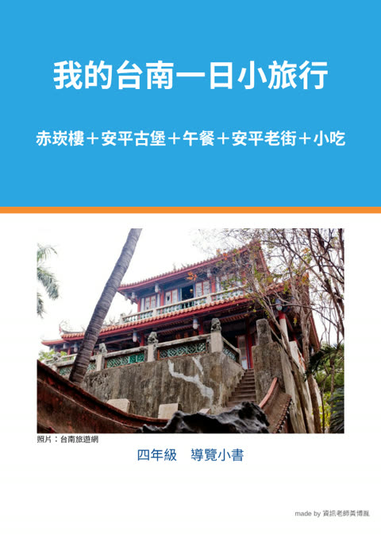
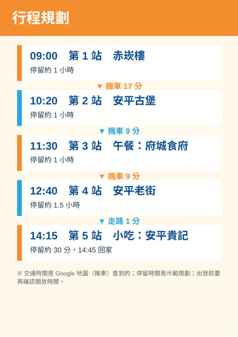
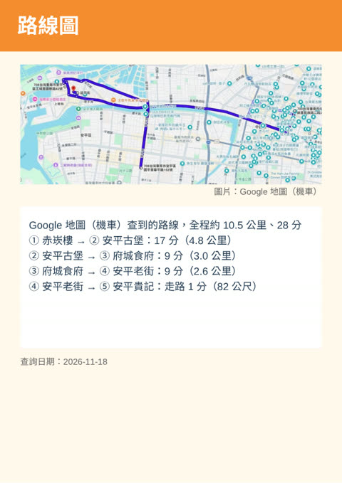
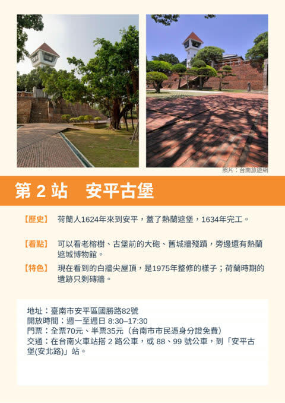
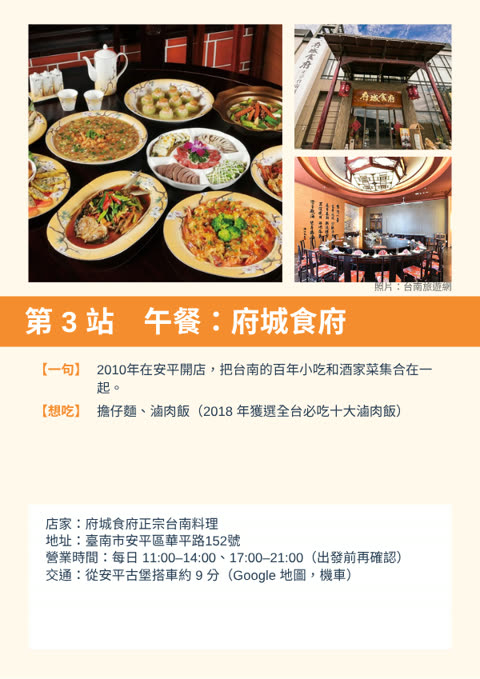
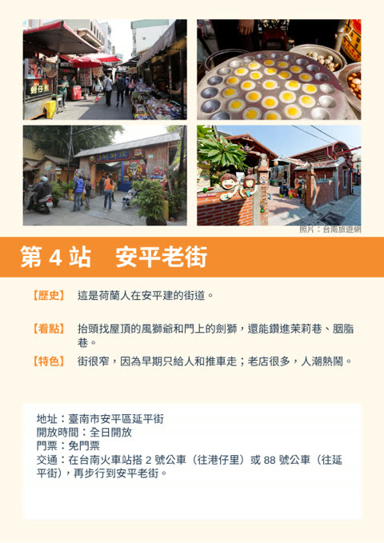

台南小導遊養成記
第 8 課：用 Canva 做導覽手冊
先看：完整的手冊
今天的任務
- 1開一份 A4 新文件
- 2認識 Canva 的編輯畫面
- 3做封面和目錄
其他頁，之後的課再做。
一本完整的手冊，有 11 頁
點圖放大。橘色字是會用到「文件裡的資料」的頁。

第 1 頁
封面
書名、景點、照片

第 2 頁
目錄
章節和頁碼

第 3 頁
行程規劃
時間表、交通

第 4 頁
路線圖
Google 地圖

第 5 頁
景點頁
第 1 站

第 6 頁
景點頁
第 2 站

第 7 頁
午餐
第 3 站

第 8 頁
景點頁
第 4 站

第 9 頁
小吃
第 5 站

第 10 頁
小提醒
注意事項

第 11 頁
封底
謝謝、署名
你文件裡的資料，放在哪一頁？
- 行程規劃：幾點到哪裡的時間表（如 9:00 赤崁樓 10:00 …），交通格子
- 路線圖：用 Google 地圖把每一站連起來，截圖放進來
- 景點頁：地址、開放時間、門票、照片（1～4 張），還有景點介紹（歷史、看點、特色）
- 美食也是一站：午餐、小吃，寫成「第 3 站 午餐」「第 5 站 小吃」，一樣一站一頁
配一配：這些字放哪一頁？